Your desk, on an old phone.
PhoneDesk turns a spare Android phone into a display for your Windows PC: what is playing, synced lyrics, your calendar, PC stats and the battery of every Bluetooth device, laid out the way you want.
New in {{VERSION}} Liquid Glass widgets and Bluetooth batteriesFree and open source · Windows 10 and 11 · Android 7 or newer
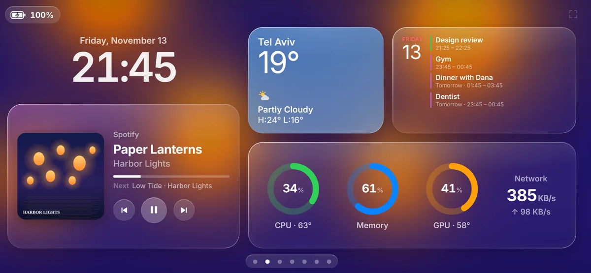
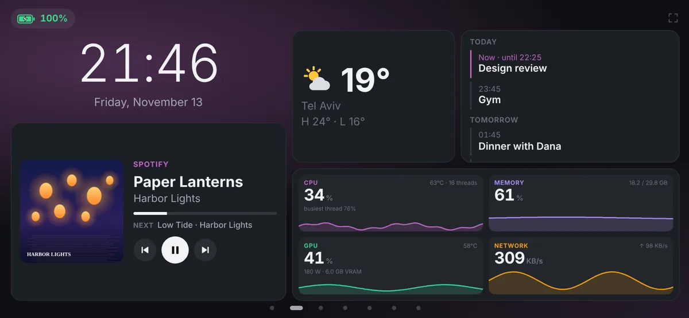
Sixteen widgets for the phone, placed anywhere.
Every widget scales to the space you give it, in two styles: Classic, or Liquid Glass over a blur of the album you are playing.
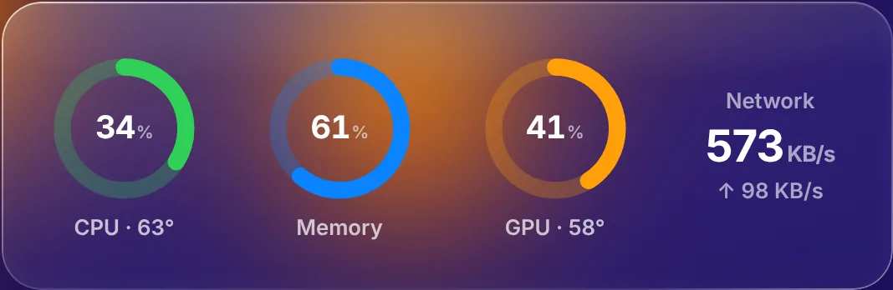
PC stats
CPU, memory, GPU with its heat, network, disks and the busiest apps.
Weather
Now, or five days ahead.
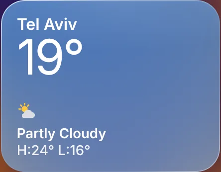
Bluetooth devices
NewEvery device connected to the PC, with its battery when it reports one.
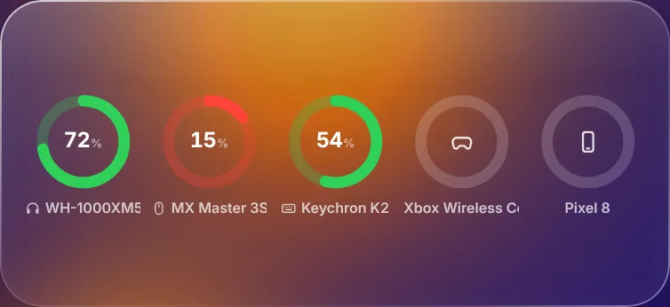
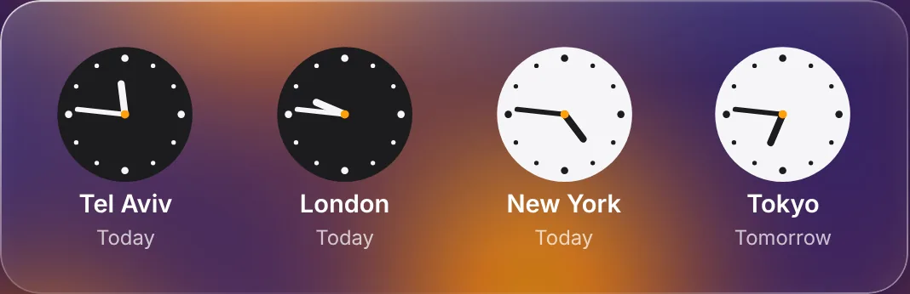
World clock
NewThe time in up to four places.
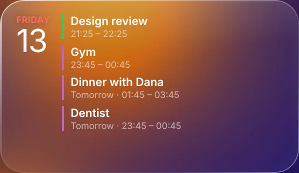
Agenda
Your next events from Google, Outlook or iCloud.
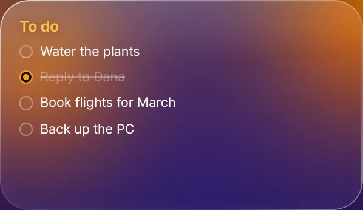
Notes
NewWrite them on the PC, tick them off on the phone.
Also: clock, 5-day forecast, Now playing, lyrics, volume, shortcut buttons, timer, photo frame, recently played, text, and widgets from addons.
Lay out pages on the PC, or right on the phone.
- A 12 by 6 grid. Drag to move, pull a corner to resize, undo and redo.
- Hold a widget on the phone to move it there, then tap Done.
- Tap and hold actions per widget: play, open a screen, run a shortcut.
- Corners, background and accent for each page.
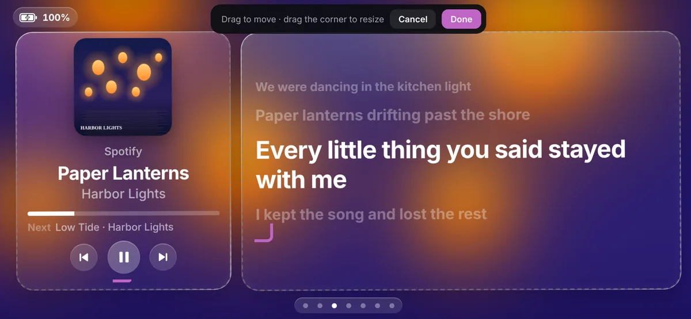
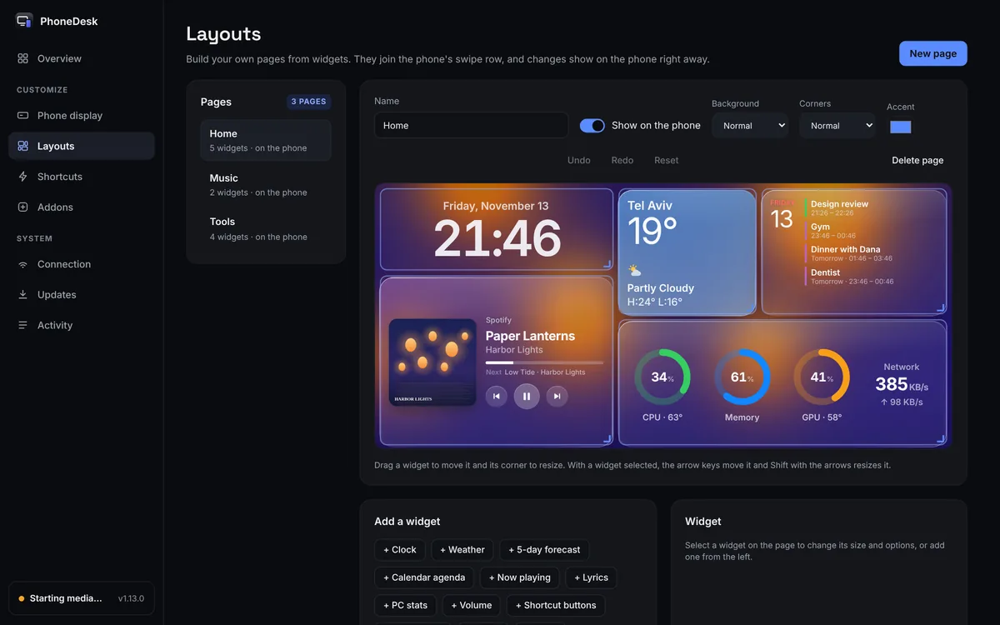
Lyrics on the phone, in time with the song.
Spicy Lyrics lights each word as it is sung. When only LRCLIB has the song, each line lights whole, right on its cue.
- Spotify, or any player that shows in the Windows media controls.
- Up next from your Spotify queue.
- Double-tap to play or pause, if you turn it on.
- Four lyrics styles, and Hebrew lyrics read right to left.
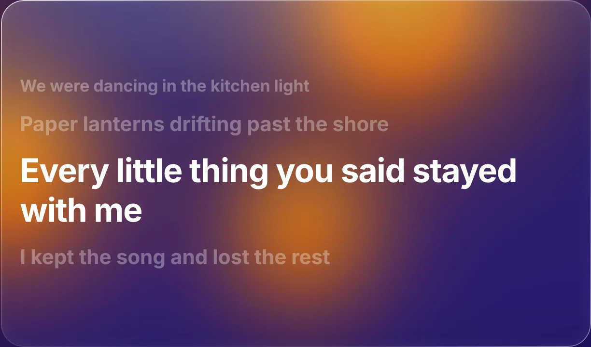
Four built-in PhoneDesk screens.
Swipe between them and your own pages, switch them on a schedule, and let night mode dim the phone with the room.
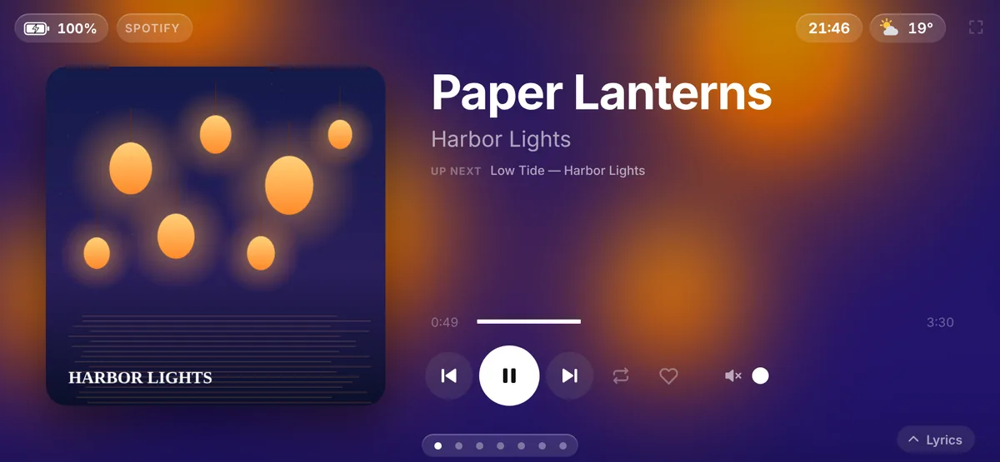
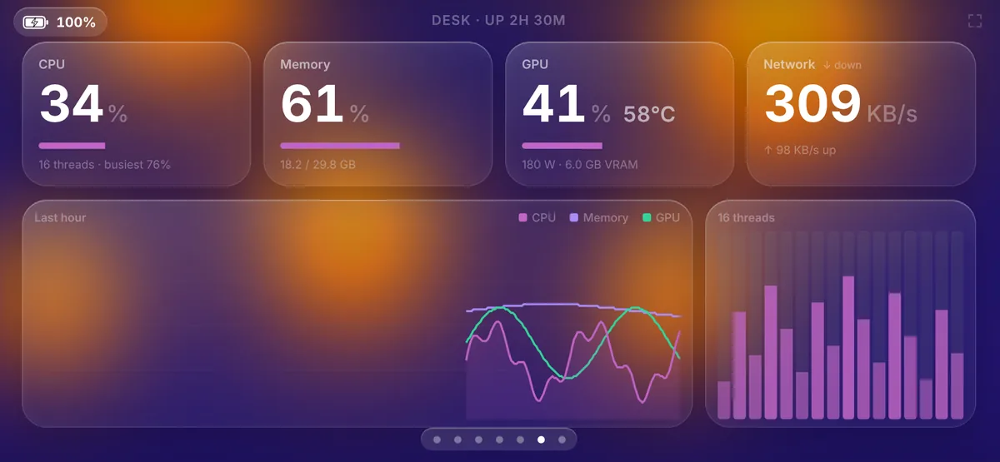
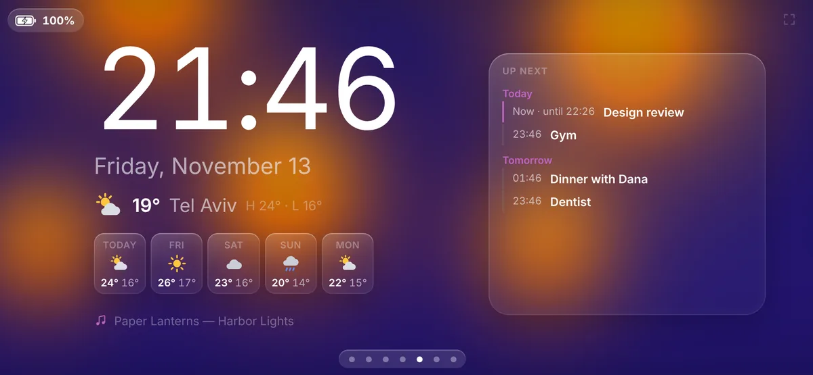
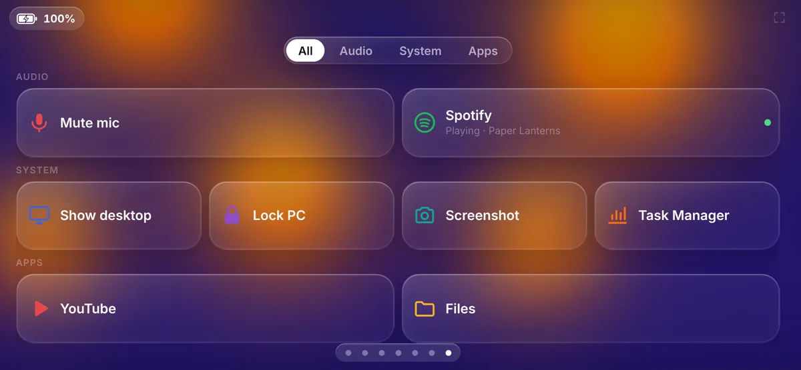
PhoneDesk setup in three steps.
-
Install PhoneDesk on the PC
No admin rights and nothing else to install. It sits in the tray, starts with Windows and updates itself.

-
Open it on the phone
Scan the QR code, or install the small phone app: it finds the PC by itself over Wi-Fi or USB.

-
Pick a template
Start from Desk, Music or Clock, then change any page from the PC or the phone.
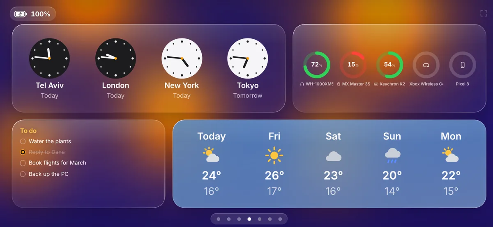
PhoneDesk addons for your own screens and widgets.
Addons bring new screens, widgets and shortcut actions: a Home Assistant panel, a focus timer, anything you can build with the SDK. Every permission is shown before an addon installs. Browse the addons or build one.
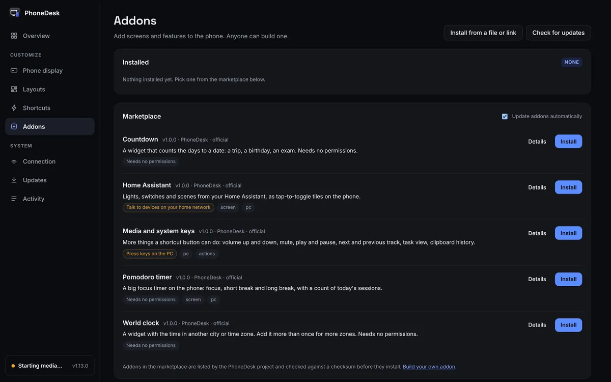
PhoneDesk questions before you install.
The PC and phone you need
A Windows 10 or 11 PC and a phone on Android 7 or newer, on the same Wi-Fi or plugged in by USB.
Security warning on install
The setup is not code-signed yet, so Windows asks first: More info, then Run anyway. GitHub Actions builds every release.
Privacy
Keys, tokens and your calendar address stay on the PC. Lyric and weather lookups send only the song or the city.
Old phones
The glass look draws on a wallpaper blurred once per song, so it stays smooth on old hardware.